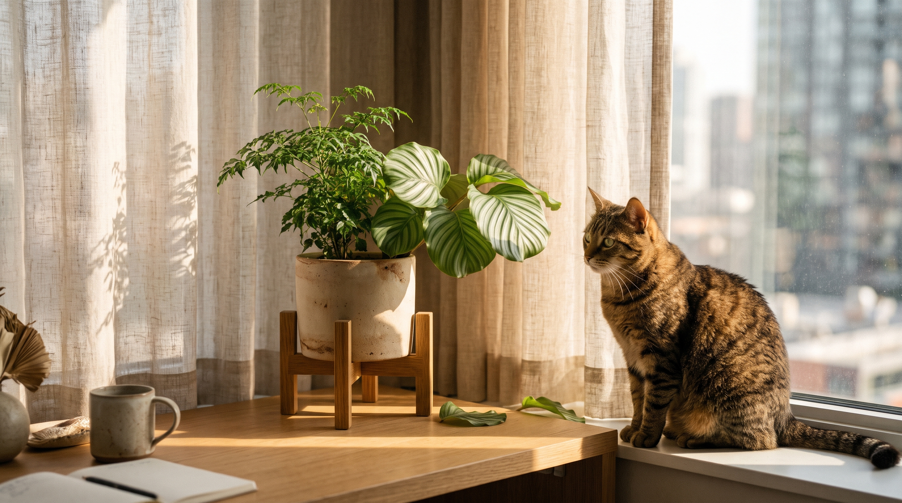

進入 11 月底，台北的東北季風微涼，許多都市公寓開始關上落地窗擋風。當溫暖的冬日晨光斜射進室內，全屋採光最好的窗台與書桌邊，瞬間成了植物行光合作用的黃金搖滾區——但同時，那也是貓主子最愛趴著曬太陽、看小鳥的專屬寶座。
不少植友兼貓奴都經歷過這樣的早晨慘劇：一覺醒來，心愛盆栽裡的培養土被貓掌掏出一大半，或是纖細的葉片被當成逗貓棒撥得東倒西歪。其實，想讓綠意與貓咪在有限的都市空間裡和平共處，不需要把植物關進鐵籠，只要順應貓咪的行為天性，微調窗台配置與盆土介質，就能打造優雅又安全的「人貓共生綠洲」。
貓咪撞倒花盆，往往不是故意搗蛋，而是盆栽剛好擋在牠跳上窗台看風景的「起跳點」與「巡邏動線」上。
實作步驟：在窗台或靠窗書桌規劃時，先觀察貓咪平常跳躍與趴臥的固定角落，刻意留出至少 40 公分寬的「無障礙貓咪日光浴區」。接著，利用實木花架或層板將植栽墊高 15 至 25 公分，並換上重心穩固、底部厚實的手作柴燒粗陶盆。當貓咪有專屬的柔軟窗台墊可以舒服趴臥，而盆器又高於牠的踏腳動線且推不動時，翻盆機率就會瞬間歸零。
為什麼貓咪特別喜歡掏某些花盆的土？因為傳統深黑色的細碎泥炭土或培養土，觸感與氣味太像貓砂了！加上若表土長期潮濕散發腐殖味，更會激發貓咪掩埋與挖掘的本能。
實作步驟：將盆土表層 2 至 3 公分替換為日本三本線極硬質赤玉土或大顆粒火山石鋪面。硬質顆粒介質不僅排水透氣、能徹底阻斷小黑飛（蕈蚋）孳生，略帶稜角的乾爽顆粒感也能讓貓掌覺得「不好挖」而失去興趣。日常澆水時，改用日式極細長嘴澆水壺穿過枝葉直達土表慢澆，避免水花濺濕周圍桌面或沖散鋪面土，維持盆面乾爽潔淨。
細長下垂、隨風劇烈晃動的線狀葉片，對貓咪來說就像全天候自動揮舞的逗貓棒。在人貓共處的案頭與客廳，挑選葉片圓潤、株型收攏且具備 ASPCA 無毒認證的植栽是最高原則。
實作步驟：首推擁有圓潤寬大銀綠葉片的青蘋果竹芋 (Calathea orbifolia) 與圓葉椒草，圓弧葉緣不具逗貓誘惑力，厚實葉片還能幫助冬日緊閉門窗的室內滯塵保濕；若喜歡極具生命力的樹型，則可選擇清晨羽葉舒展、夜晚自動閉合睡覺的小豆樹 (Radermachera sinica)，或是蒼勁古樸的榔榆（錢榆）小品盆景，讓案頭多一份隨日夜流轉的靜謐儀式感。
巧遇店長親自把關 100% 寵物無毒植栽・搭配職人赤玉土與養護資材
探索寵物友善專區 選購職人養護資材 LINE 諮詢巧遇店長目前沒有選購植物